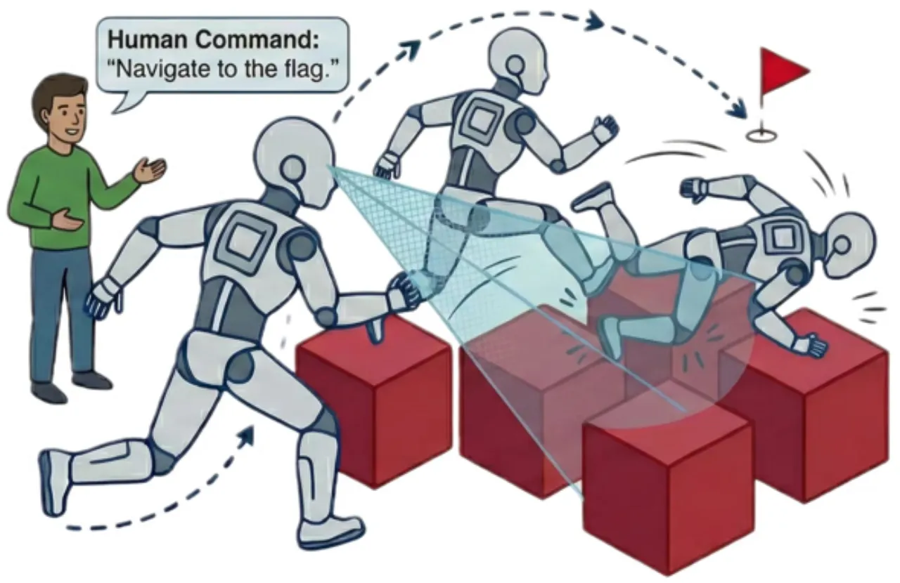
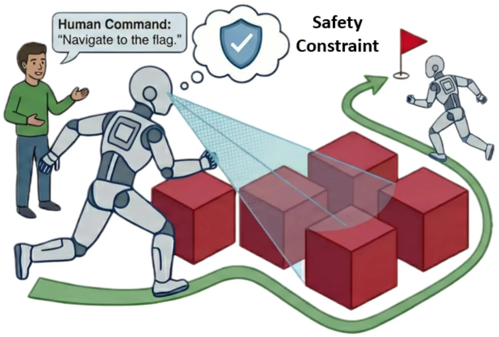
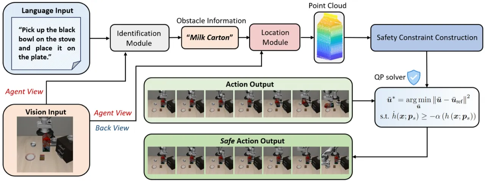
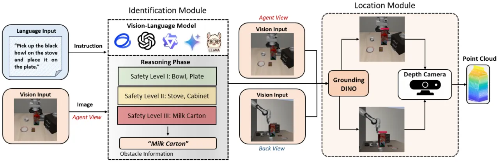
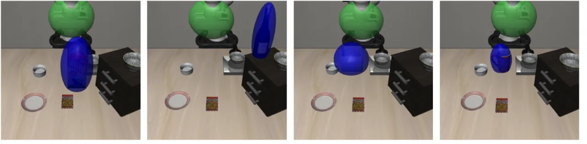
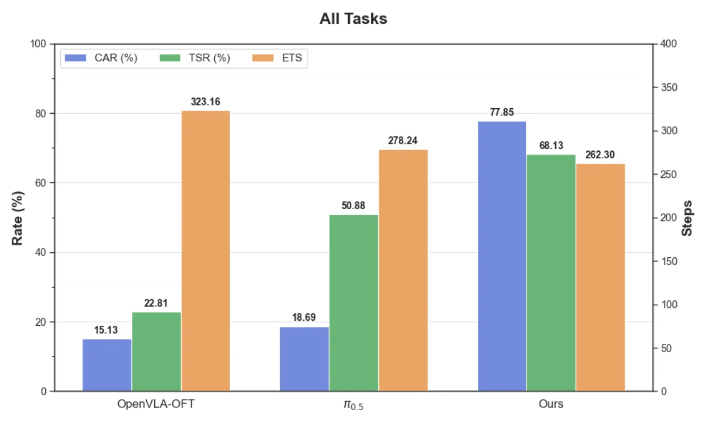

在已有 VLA 模型的动作输出后面，外接一个即插即用的安全约束层（AEGIS），通过 VLM 感知识别障碍物、CBF-QP 求解最小偏移量，使机器人在保留原始任务意图的同时实时避免碰撞，且无需重新训练底层 VLA 模型。
VLA 模型在语义指令跟随方面表现出色，但在真实世界部署中缺乏明确的安全保障。碰撞可能导致硬件损坏、人员受伤或财产损失。现有安全方法大多依赖强化学习中的软约束，缺乏在推理时强制执行安全边界的显式机制。
"Safety stands as a prerequisite for the real-world deployment of VLA models, as collisions in unstructured environments can lead to hardware damage, human injury, or property loss."


AEGIS（Action Execution Guarded by Invariant Safety）是一个即插即用的安全约束层，放置在任意 VLA 模型的动作输出之后，由两个功能模块构成：基于视觉语言的安全评估模块，以及基于动作驱动的安全保证控制模块。整个系统无需重新训练底层 VLA 模型。

利用 VLM 根据任务指令和视觉观测，识别场景中最可能阻碍机器人运动的障碍物。随后使用 GroundingDINO 进行开放集目标检测，结合深度信息（点云融合），将语义层面的风险转换为物理空间中的回避约束。这一模块实现了从自然语言描述到物理空间安全要求的跨模态转换。

核心优化问题：以最小偏移量修正 VLA 原始动作，同时保证机器人末端执行器不与障碍物碰撞。数学上将末端执行器和障碍物分别建模为椭球体（MVEE），通过在单位球面上引入虚拟辅助状态计算最小有符号距离，构造 Control Barrier Function h(x)，并将安全约束表达为：
"minimize ||u − u_vla||² subject to ḣ(x) ≥ −α(h(x))"
其中 u_vla 为 VLA 原始输出动作，u 为安全修正动作，α 为扩展 class-K 函数。该 QP 问题可在毫秒级内求解，额外延迟仅约 0.356 ms。

假设感知准确、障碍物表示完整，"the AEGIS framework guarantees that the entire robot end-effector will not collide with the obstacle."（Theorem 1）
作者构建了新基准 SafeLIBERO，包含 4 个 LIBERO 子任务套件、16 个任务、32 个场景、共 1,600 个 episode，涵盖不同空间复杂度和障碍物干扰级别。基线模型为 OpenVLA-OFT 和 π₀.₅，指标包括：障碍物回避率（CAR）、任务成功率（TSR）、执行步数（ETS）。
| 方法 | CAR ↑ (%) | TSR ↑ (%) | ETS ↓ |
|---|---|---|---|
| OpenVLA-OFT | 15.13 | 22.81 | 323.16 |
| π₀.₅ | 18.69 | 50.88 | 278.24 |
| AEGIS（本文） | 77.85 | 68.13 | 262.30 |
| 套件 | CAR ↑ (%) | TSR ↑ (%) | ETS ↓ |
|---|---|---|---|
| SafeLIBERO-Spatial | 75.50 | 73.25 | 188.20 |
| SafeLIBERO-Goal | 81.50 | 75.25 | 179.60 |
| SafeLIBERO-Object | 74.75 | 80.25 | 201.26 |
| SafeLIBERO-Long | 79.63 | 43.75 | 480.12 |

实验表明，VLM 驱动的障碍物识别模块和 CBF-QP 安全控制模块均不可或缺：去掉 VLM 识别后，系统无法正确确定需要回避的目标物体；去掉 CBF 约束后，安全保证在数学上不再成立，碰撞率显著上升。SafeLIBERO-Long 套件的 TSR（43.75%）明显低于其他套件，反映了长序列任务中分布偏移问题对策略性能的影响。
AEGIS 无法达到 100% CAR 的主要原因在于上游感知失败：VLM 可能误识别障碍物、GroundingDINO 的边界框可能不准确、点云滤波可能低估障碍物的实际几何形状。此外，系统当前未对机器人"未建模的运动学部件（unmodeled kinematic components，such as the penultimate robot arm）"进行碰撞检测，这些部件同样可能发生碰撞。
当安全约束迫使机器人末端执行器绕开障碍物移动到训练数据中未见过的区域时，底层 VLA 策略的性能会出现退化："the robot, after successfully avoiding an obstacle, fails to complete the task"，即避障成功但无法继续完成原始任务。
当前评估将末端执行器限定为纯平移运动。作者指出，引入完整 6-DoF（含旋转）虽然可能不会显著提升 CAR，但"would likely greatly boost the task success rate"，因为更大的运动自由度可以让机器人在绕障后更顺利地回归任务路径。